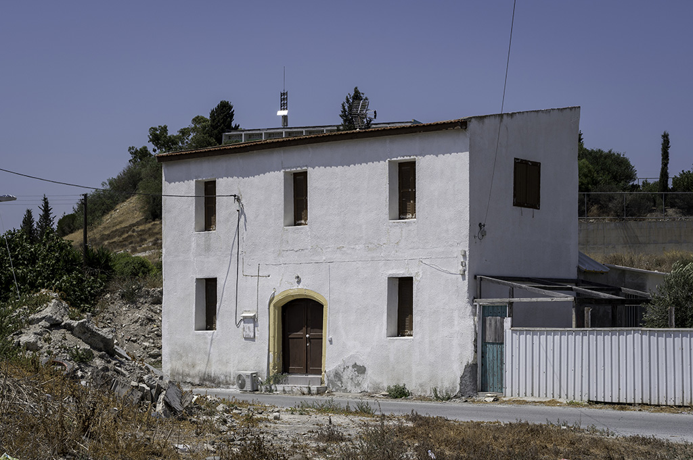
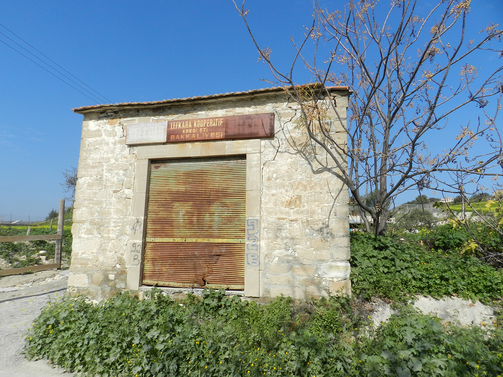
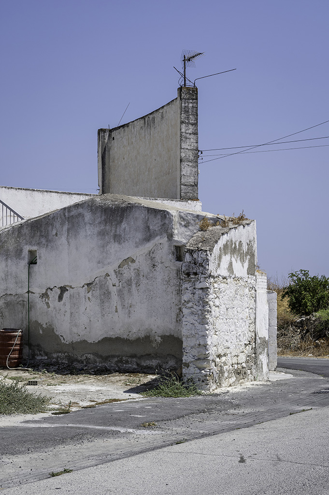
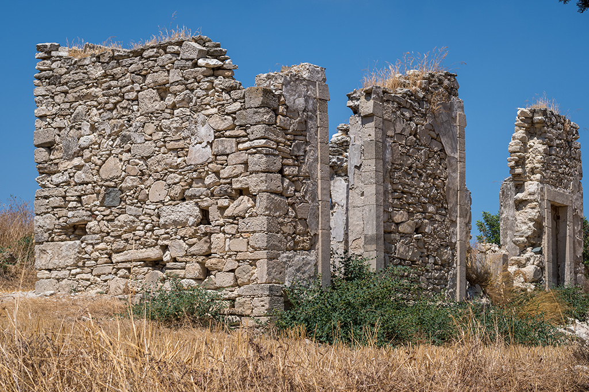

The village was named after 'Kophino', a hill 2 km east of the settlement. Another local tradition links its name with the existence of poisonous snakes in the region, known as 'phines'. The area of Kophinou has been inhabited since the Byzantine period, while during the Frankish era it comprised a feud. Medieval maps of Cyprus refer to Kophinou as Cophinia, Cofinia and Copno. The medieval historian Leontios Machairas refers to the village as the place of burial for a number of 'Alaman saints', who fled from Syria to Cyprus in different phases of the Byzantine era. The village of Kophinou was probably founded at the site of the now deserted Turkish-Cypriot quarter after the Ottoman conquest of Cyprus (1570/71), having replaced the medieval settlement located around the Byzantine church of Panagia, 900 metres to the east. With the foundation of the Republic of Cyprus in 1960, the village numbered 728 inhabitants: 710 Turkish-Cypriots and 18 Greek-Cypriots. By 1973, Kophinou was the second largest Turkish-Cypriot village on the island with 1025 inhabitants.
Το όνομα δόθηκε στο χωριό από το λόφο «Κόφινο», ο οποίος βρίσκεται 2 χιλιόμετρα ανατολικά του σημερινού οικισμού. Μια άλλη, λαϊκή, ερμηνεία του ονόματος συνδέει το χωριό με την ύπαρξη μεγάλου αριθμού δηλητηριωδών φιδιών, τις γνωστές «φίνες». Γραπτές αναφορές και αρχαιολογικά τεκμήρια μαρτυρούν κατοίκηση στην περιοχή από τους βυζαντινούς χρόνους, ενώ κατά την περίοδο της Φραγκοκρατίας η περιοχή υπήρξε φέουδο. Η Κοφίνου αναφέρεται επίσης σε χάρτες της ίδιας περιόδου ως Cophinia, Cofinia και Copno. Ο μεσαιωνικός χρονογράφος Λεόντιος Μαχαιράς αναφέρει την Κοφίνου ως τόπο ταφής αρκετών «Αλαμανών αγίων» οι οποίοι είχαν καταφύγει στην Κύπρο από τη Συρία σε διάφορες φάσεις της βυζαντινής περιόδου. Το χωριό της Κοφίνου φαίνεται ότι ιδρύθηκε στη θέση του εγκαταλειμμένου σήμερα τουρκοκυπριακού οικισμού μετά την οθωμανική κατάκτηση της Κύπρου (1570/71) με τη μεταφορά της οικιστικής θέσης των μεσαιωνικών χρόνων που βρισκόταν γύρω από το βυζαντινό ναό της Παναγίας, μόλις 900 μέτρα ανατολικά. Το 1960, με την ίδρυση της Κυπριακής Δημοκρατίας, το χωριό αριθμούσε 728 κάτοικους: 710 Τουρκοκύπριους και 18 Ελληνοκύπριους. Το 1973, η Κοφίνου υπήρξε το δεύτερο μεγαλύτερο τουρκοκυπριακό χωριό στην Κύπρο, με 1025 κατοίκους.
Köy adını yerleşimin 2 km doğusundaki bir tepe olan 'Kofino'dan almıştır. Başka bir yerel rivayet, adını bölgedeki 'fines' olarak bilinen zehirli yılanların varlığıyla ilişkilendirir. Kofinu bölgesi Bizans döneminden beri iskan edilmişken, Frank döneminde bir zeamete dönüştü. Kıbrıs'ın orta çağ haritaları Kofinu'ya Cophinia, Cofinia ve Copno olarak atıfta bulunur. Ortaçağ tarihçisi Leontios Machairas, köyü Bizans döneminin farklı aşamalarında Suriye'den Kıbrıs'a kaçan bir dizi "Alaman azizinin" gömüldüğü yer olarak nitelendiriyor. Kofinou köyü, muhtemelen, Osmanlıların Kıbrıs'ı fethinden (1570/71) sonra, 900 metre doğuda bulunan Panayia Bizans kilisesinin çevresinde bulunan ortaçağ yerleşiminin yerini alarak terk edilmiş, Kıbrıs Türk mahallesinin yerinde kurulmuştu. 1960 yılında Kıbrıs Cumhuriyeti'nin kurulmasında köyün sakinlerinin sayısı 728’di: 710 Kıbrıslı Türk ve 18 Kıbrıslı Rum. 1973 yılına kadar Kofinou, 1025 sakiniyle adadaki en büyük ikinci Kıbrıs Türk köyüydü.
Modern history
Σύγχρονη ιστορία
Modern tarih
Kophinou relates to tragic events in the modern history of Cyprus. Having been a Turkish-Cypriot village on a strategic location (also known as ‘Geçitkale’ or ‘Fortress of the passageway’ in Turkish), it became the epicentre of military operations in Cyprus in the 1960s. One of the shortcomings of the young government of the Republic of Cyprus was its inability to resolve the ongoing disputes between the two communities. In 1963, the disputes led to the resignation of the Turkish-Cypriots from the Government of the Republic (and from other state and political offices) and to armed bi-communal conflicts that continued into 1964 and were repeated during the ‘Kophinou crisis’ in 1967. Greek- and Turkish-Cypriots lived well together until then. The bi-communal strife in the 1960s, however, gradually led to the separation of the two ethnic groups with the creation of enclaves, the establishment of the so-called Green Line and the resettlement of many communities. Thousands of Turkish-Cypriots left their villages and settled in six Turkish-Cypriot enclaves that were created within and around exclusively Turkish-Cypriot quarters in towns or large villages.
Η Κοφίνου συνδέεται με τραγικές στιγμές της σύγχρονης ιστορίας της Κύπρου. Ως ένα από τα τουρκοκυπριακά χωριά του νησιού που βρίσκονταν σε στρατηγική θέση (γνωστό στα τούρκικα και ως «Geçitkale» ή «Κάστρο του περάσματος»), αποτέλεσε το επίκεντρο πολεμικών επιχειρήσεων στα κρίσιμα χρόνια της δεκαετίας του 1960 στην Κύπρο. Ένα από τα σημαντικά προβλήματα της κυβέρνησης του νέου κράτους ήταν η αδυναμία επίλυσης των διαφωνιών μεταξύ των δύο κοινοτήτων. Το 1963 οι διαφορές οδήγησαν στην αποχώρηση των Τουρκοκυπρίων από την κυβέρνηση της Δημοκρατίας και τα υπόλοιπα πολιτειακά και πολιτικά αξιώματα και σε ένοπλες διακοινοτικές διαμάχες, οι οποίες συνεχίστηκαν το 1964 και επαναλήφθηκαν με την «κρίση της Κοφίνου» το 1967.
Kofinu, modern Kıbrıs tarihinde yer alan trajik olaylara bağlıdır. Stratejik bir konumda bulunan (Türkçe'de 'Geçitkale' olarak bilinen) bir Kıbrıs Türk köyü olan köy, 60'larda Kıbrıs'taki askeri operasyonların merkez üssü haline geldi. Kıbrıs Cumhuriyeti'nin genç hükümetinin eksikliklerinden biri, iki toplum arasında devam eden anlaşmazlıkları çözememiş olmasıydı. 1963 yılında yer alan anlaşmazlıklar Kıbrıslı Türklerin Cumhuriyet Hükümetinden (ve diğer devlet ve siyasi makamlardan) istifa etmelerine ve 1964 yılına kadar devam eden ve 1967 yılında 'Kofinu krizi' sırasında tekrarlanan silahlı iki toplumlu çatışmalara yol açtı. O zamana kadar Kıbrıslı Rumlar ve Kıbrıslı Türkler birlikte iyi yaşadılar. 60'larda yaşanan iki toplumlu çekişme, zamanla iki etnik grubun ayrılmasına, yerleşim bölgelerinin yaratılmasına, Yeşil Hat'ın kurulmasına ve birçok topluluğun yeniden yerleşimine yol açtı. Binlerce Kıbrıslı Türk köylerini terk etti ve kasabalarda veya büyük köylerde sadece Kıbrıslı Türk mahallelerinde ve çevresinde oluşturulan altı Kıbrıslı Türk yerleşme bölgesine yerleşti.
Since Kophinou was inhabited exclusively by Turkish-Cypriots for most of the 1960’s, located close to mixed villages, such as Agios Theodoros to the west, Alaminos to the south, Tochni and Mari, the Greek-Cypriots feared that the Turkish-Cypriots would create an enclave in the area and would cut off the main road network of the island that connected Nicosia with Limassol and Larnaca. In 1963, Kophinou and the Turkish-Cypriot sector of Agios Theodoros passed under the control of the Turkish Resistance Organisation or Türk Mukavemet Teşkilatı (ΤΜΤ). The Cyprus police patrolled frequently the village of Agios Theodoros until September 1967. In the fall of 1967, an armed group of Turkish-Cypriot inhabitants of Kophinou prevented the police patrols to enter Agios Theodoros. As a result, an extended crisis broke out that peaked in November 1967 and led to an attack by the National Guard against Kophinou. The Greek-Cypriot side assembled armed forces to resolve the problem of the traffic blocking on the Nicosia-Limassol motorway caused by a group of armed Turkish-Cypriot men. The Government estimated that there were 400 armed Turkish-Cypriots in the area, ready to take the region and block the most important road junction in Cyprus. According to the United Nations (UN), the attack against Kophinou by the National Guard was a large-scale military operation against the village, resulting in the killing of 24 Turkish-Cypriots, while leaving 1,000 inhabitants homeless. The aforementioned events led to a major diplomatic crisis, and Turkey threatened with military intervention. The crisis was ended with the intervention of the UN, while the National Guard had to retreat from the areas they took under their control. Meanwhile, Turkey demanded and succeeded in securing the recall of the Hellenic Military Division and General Grivas to Greece.
Μέχρι τότε, Ελληνοκύπριοι και Τουρκοκύπριοι ζούσαν μαζί. Κατά την περίοδο των ταραχών, όμως, ξεκίνησε ο διαχωρισμός των δύο εθνοτικών ομάδων με τη δημιουργία θυλάκων, της Πράσινης Γραμμής και της μετεγκατάστασης πληθυσμών. Χιλιάδες Τουρκοκύπριοι μετακινήθηκαν από τα χωριά τους και εγκαταστάθηκαν σε έξι τουρκοκυπριακούς θύλακες που σχηματίστηκαν μέσα και γύρω από αποκλειστικά τουρκοκυπριακές συνοικίες σε πόλεις και κωμοπόλεις ή σε αλλά μεγάλα τουρκοκυπριακά χωριά. Η Κοφίνου δεν υπήρξε τουρκοκυπριακός θύλακας όμως, επειδή αποτελούσε κατά το μεγαλύτερο μέρος της δεκαετίας του 1960 αμιγώς τουρκοκυπριακό χωριό, που γειτνίαζε με γειτονικά μικτά χωριά, όπως τον Άγιο Θεόδωρο στα δυτικά, την Αλαμινό στα νότια, την Τόχνη και το Μαρί, υπήρχε ο φόβος στους Ελληνοκύπριους ότι οι Τουρκοκύπριοι θα δημιουργούσαν θύλακα και θα απέκοπταν τον κύριο οδικό άξονα του νησιού, που συνέδεε τη Λευκωσία με τη Λεμεσό και τον κόμβο προς τη Λάρνακα. Από το 1963, η Κοφίνου και ο τουρκικός τομέας του Αγίου Θεοδώρου πέρασαν στον έλεγχο της ΤΜΤ (Türk Mukavemet Teşkilatı - Τουρκική Οργάνωση Αντίστασης). Περίπολοι της κυπριακής αστυνομίας πραγματοποιούνταν συχνά στο χωριό του Αγίου Θεοδώρου μέχρι τον Σεπτέμβριο του 1967. Το φθινόπωρο του 1967, ένοπλοι Τουρκοκύπριοι της Κοφίνου εμπόδισαν επανειλημμένως τις αστυνομικές περιπόλους να εισέλθουν στον Άγιο Θεόδωρο. Το περιστατικό αυτό αποτέλεσε την αφορμή για μια παρατεταμένη κρίση που κορυφώθηκε τον Νοέμβριο του 1967 και κατέληξε σε γενικευμένη επίθεση της Εθνικής Φρουράς εναντίον της Κοφίνου
Batıda Agios Theodoros, güneyde Alaminos, Tochni ve Mari gibi karma köylerin yakınında bulunan Kofinu’da, 60'lı yılların büyük bölümü yalnızca Kıbrıslı Türklerin yaşadığı için Kıbrıslı Rumlar, Kıbrıslı Türklerin bölgede bir yerleşme bölgesi yaratacağından ve Lefkoşa'yı Limasol ve Larnaka'ya bağlayan adanın ana yol ağını keseceğinden korktu. 1963 yılında Kofinu ve Agios Theodoros'un Kıbrıs Türk kesimi Türk Mukavemet Teşkilatı'nın (ΤΜΤ) kontrolüne geçti. Kıbrıs polisi, Eylül 1967'ye kadar sıkça Agios Theodoros köyünde devriye gezdi. 1967 sonbaharında, Kofinu'nun Kıbrıslı Türk sakinlerinden oluşan silahlı bir grup polis devriyelerinin Agios Theodoros'a girmesini engelledi. Sonuç olarak, Kasım 1967'de zirveye çıkan ve Ulusal Muhafızların Kofinu'ya saldırmasına neden olan uzun bir kriz çıktı. Kıbrıs Rum tarafı, Lefkoşa-Limasol otoyolunda bir grup silahlı Kıbrıslı Türk adamın yarattığı trafiğin tıkanması sorununu çözmek için silahlı kuvvetler topladı. Hükümet, alanda, bölgeyi ele geçirmeye ve Kıbrıs'taki en önemli yol kavşağını kapatmaya hazır 400 silahlı Kıbrıslı Türk olduğunu hesapladı. Birleşmiş Milletler'e (BM) göre, Milli Muhafızın Kofinu'ya yönelik saldırısı köye yönelik büyük çaplı bir askeri operasyondu ve 24 Kıbrıslı Türk'ün öldürülmesi ve 1000 sakinin evsiz kalmasıyla sonuçlandı. Sözü edilen olaylar büyük bir diplomatik krize yol açtı ve ardından Türkiye askeri müdahale ile tehdit etti. Kriz BM'nin müdahalesi ile sona ererken, Milli Muhafız kontrol altına aldıkları bölgelerden çekilmek zorunda kaldı. O sırada Türkiye, Yunan Askeri Tümenin ve General Grivas'ın Yunanistan'a geri çağrılmasını talep edip sağladı.
Since Kophinou was inhabited exclusively by Turkish-Cypriots for most of the 1960’s, located close to mixed villages, such as Agios Theodoros to the west, Alaminos to the south, Tochni and Mari, the Greek-Cypriots feared that the Turkish-Cypriots would create an enclave in the area and would cut off the main road network of the island that connected Nicosia with Limassol and Larnaca. In 1963, Kophinou and the Turkish-Cypriot sector of Agios Theodoros passed under the control of the Turkish Resistance Organisation or Türk Mukavemet Teşkilatı (ΤΜΤ). The Cyprus police patrolled frequently the village of Agios Theodoros until September 1967. In the fall of 1967, an armed group of Turkish-Cypriot inhabitants of Kophinou prevented the police patrols to enter Agios Theodoros. As a result, an extended crisis broke out that peaked in November 1967 and led to an attack by the National Guard against Kophinou. The Greek-Cypriot side assembled armed forces to resolve the problem of the traffic blocking on the Nicosia-Limassol motorway caused by a group of armed Turkish-Cypriot men. The Government estimated that there were 400 armed Turkish-Cypriots in the area, ready to take the region and block the most important road junction in Cyprus. According to the United Nations (UN), the attack against Kophinou by the National Guard was a large-scale military operation against the village, resulting in the killing of 24 Turkish-Cypriots, while leaving 1,000 inhabitants homeless. The aforementioned events led to a major diplomatic crisis, and Turkey threatened with military intervention. The crisis was ended with the intervention of the UN, while the National Guard had to retreat from the areas they took under their control. Meanwhile, Turkey demanded and succeeded in securing the recall of the Hellenic Military Division and General Grivas to Greece.
Η Ελληνοκυπριακή πλευρά κινητοποίησε στρατιωτικές δυνάμεις προκειμένου να επιληφθεί του προβλήματος παρακώλυσης της κυκλοφορίας στο δρόμο Λευκωσίας-Λεμεσού από Τουρκοκύπριους ένοπλους. Η εκτίμηση της Κυβέρνησης ήταν πως στην περιοχή υπήρχαν 400 οπλισμένοι Τουρκοκύπριοι, οι οποίοι θα την καταλάμβαναν και θα απέκοπταν το σημαντικότερο οδικό κόμβο της Κύπρου. Σύμφωνα με τα Ηνωμένα Έθνη, η επίθεση της Εθνικής Φρουράς κατά της Κοφίνου υπήρξε μία ευρείας κλίμακας στρατιωτική επιχείρηση εναντίον του χωριού, κατά την οποία 24 Τουρκοκύπριοι έχασαν τη ζωής τους ενώ 1000 έμειναν άστεγοι. Τα γεγονότα της Κοφίνου οδήγησαν σε μεγάλη διπλωματική κρίση και η Τουρκία απείλησε με στρατιωτική επέμβαση. Για την εκτόνωση της κρίσης επενέβη ο Οργανισμός Ηνωμένων Εθνών (ΟΗΕ), ενώ η Εθνική Φρουρά αποχώρησε από τις περιοχές που είχε καταλάβει. Παράλληλα, η Τουρκία απαίτησε και πέτυχε την ανάκληση στην Ελλάδα της ελληνικής Μεραρχίας και του στρατηγού Γρίβα.Πολλοί αναφέρονται στην κρίση της Κοφίνου ως την αρχή του τέλους της νεοσύστατης Κυπριακής Δημοκρατίας που οδήγησε στην τουρκική εισβολή του 1974. Ως αποτέλεσμα της εισβολής, οι Τουρκοκύπριοι κάτοικοι μετακινήθηκαν στο κατεχόμενο σήμερα μέρος της Κύπρου, και πολλοί από αυτούς εγκαταστάθηκαν στο χωριό Λευκόνοικο. Αντίστροφα, πολλοί Ελληνοκύπριοι πρόσφυγες εγκαταστάθηκαν στην Κοφίνου.
Kofinu krizi, 1974'te Türk İstilasına yol açan olay ve Kıbrıs Cumhuriyeti'nin sonunun başlangıcı olarak kabul edilir. İşgalin bir sonucu olarak, Kofinu’nun Kıbrıslı Türk sakinleri adanın Türk kontrolündeki kısmına taşındı ve birçoğu Lefkoniko köyüne yerleşti. Benzer şekilde, birçok Kıbrıslı Rum mülteci Kofinu'ya yerleşti.
The crisis of Kophinou is considered the beginning of the end of the Republic of Cyprus that led to the Turkish Invasion in 1974. As a result of the invasion, the Turkish-Cypriot inhabitants moved to the Turkish-controlled part of the island, and many resettled at Lefkoniko village. Similarly, many Greek-Cypriot refugees resettled in Kophinou.
The Turkish-Cypriot quarter
Η τουρκοκυπριακή συνοικία
Kıbrıs Türk mahallesi
Although Greek-Cypriot refugees inhabited the Turkish-Cypriot quarter around the mosque in 1974, the new inhabitants gradually abandoned it when the contemporary Greek-Cypriot refugee quarter was built nearby. The first generation of refugees recalls that many houses were demolished in the 1980s in order to create more space for the new Greek-Cypriot refugee quarter. The current state of the former Turkish-Cypriot quarter, following its abandonment and the demolition of parts of it, do not allow us get a clear picture of the organisation of the built space. Starting your walk along the main road of the village, you come across the mosque, a landmark in the village itself and the surrounding landscape.
Ενώ αρχικά η τουρκοκυπριακή συνοικία γύρω από το τζαμί οικίστηκε από Ελληνοκύπριους πρόσφυγες, σταδιακά σχεδόν εγκαταλείφθηκε με τη δημιουργία της νέας προσφυγικής συνοικίας για τους σημερινούς κατοίκους του χωριού. Η πρώτη γενιά προσφύγων θυμάται ότι πολλές οικίες κατεδαφίστηκαν κατά τη δεκαετία του 1980 για τη δημιουργία χώρου για τους Ελληνοκύπριους πρόσφυγες. Εξαιτίας της εγκατάλειψης και της κατεδάφισης μεγάλου μέρους της τουρκοκυπριακής συνοικίας είναι δύσκολο να σχηματίσουμε μια ολοκληρωμένη εικόνα για την οργάνωση του οικισμένου χώρου. Ξεκινώντας την περιδιάβαση στον κύριο δρόμο του χωριού, συναντούμε το τζαμί, σημείο αναφοράς στο ίδιο το χωριό και το γύρω τοπίο.
Kıbrıslı Rum mülteciler 1974'te cami çevresindeki Kıbrıs Türk mahallesinde yaşamış olsalar da, yeni sakinler yakınlarında Kıbrıs Rum mülteci mahallesi inşa edildiğinde onu zamanla terk ettiler. İlk mülteci nesli, yeni Kıbrıs Rum mülteci mahallesine daha fazla alan yaratmak için 80'li yıllarda birçok evin yıkıldığını hatırlıyor. Terk edilmesinin ve bazı kısımlarının yıkılmasının ardından eski Kıbrıs Türk mahallesinin mevcut durumu, inşa edilmiş alanın düzenlenmesinin net bir resmini elde etmemize izin vermiyor. Yürüyüşünüze köyün ana yolu boyunca başlarken, köyde ve çevresindeki peyzajda bir dönüm noktası olan camiye rastlarsınız.
The Mosque
Το τζαμί
Cami
The mosque of Kophinou comprises the religious centre and reference point of the Turkish-Cypriot village. It was built during the British colonial period at the site of an earlier mosque of the Ottoman era. The stone-built minaret is adjacent to the southwest wall of the main building. The muezzin (Islamic religious official) would call the faithful to the daily prayer from the open balcony, accessed through a staircase on the west side of the building. On the metal tracery covering the opening above the main entrance, one can see the engraved date 1922. Above the door, an inscription in Ottoman Turkish includes the date 1933 and acknowledges the contribution of the Director of ΕVKAF (Kıbrıs Vakıflar İdaresi / Cyprus Pious Foundations Board) in the construction of the mosque.
Το μουσουλμανικό τέμενος της Κοφίνου αποτελεί το θρησκευτικό κέντρο και σημείο αναφοράς του τουρκοκυπριακού χωριού. Κτίστηκε κατά την περίοδο της Αγγλοκρατίας στη θέση ενός προγενέστερου τεμένους των οθωμανικών χρόνων. Ο μιναρές είναι κατασκευασμένος από λαξευτή πέτρα και βρίσκεται στο νοτιοδυτικό τμήμα του μνημείου. Η είσοδος στο μιναρέ γινόταν από την ανοικτή στοά της δυτικής πλευράς του κτηρίου, από όπου μια σκάλα οδηγούσε στον ανοιχτό εξώστη. Από εκεί ο μουεζίνης καλούσε τους πιστούς μουσουλμάνους σε προσευχή. Η χρονολογία 1922 είναι χαραγμένη στο μεταλλικό διάκοσμο του φεγγίτη πάνω από την κύρια είσοδο. Μία επιγραφή στα Οθωμανικά Τούρκικα πάνω από την κύρια είσοδο με τη χρονολογία 1933 αναγνωρίζει την προσφορά του διευθυντή του ΕΒΚΑΦ (Kıbrıs Vakıflar İdaresi / Θρησκευτικό Ίδρυμα Τουρκοκυπρίων) στην κατασκευή του κτηρίου.
Kofinu Camii, Kıbrıs Türk köyünün dini merkezini ve referans noktasını oluşturmaktadır. İngiliz sömürge döneminde, Osmanlı döneminden kalan eski bir caminin yerine inşa edilmiştir. Taştan yapılmış minare, ana yapının güneybatı duvarına bitişiktir. Müezzin binanın batı tarafındaki bir merdivenden erişilen açık balkondan müminleri günlük namaza çağırırdı. Ana girişin üstündeki açıklığı örten metal oyma üzerinde oyulmuş 1922 yılı görülmektedir. Kapının üstündeki Osmanlı Türkçesinde yazılan kitabede 1933 tarihi yer almakta ve EVKAF (Kıbrıs Vakıflar İdaresi) Genel Müdürünün caminin inşa edilmesindeki katkısı bildirilmektedir.

The Houses
Οι οικίες
Evler
Around the mosque, you can see surviving examples of early modern and contemporary domestic architecture. The basic materials for the construction of houses in the Turkish-Cypriot quarter were plinth, clay, wood and reeds. Most of the houses share certain common features, such as the enclosed central courtyard that provided access to all rooms around it. The kitchen, the bathroom, the storeroom and/or the stable are located on the ground floor, while the bedrooms are on the first floor (where there is one). The roof is made of reeds and wooden beams.
Αντιπροσωπευτικά δείγματα οικιστικής αρχιτεκτονικής των νεότερων χρόνων μπορούμε να εντοπίσουμε στην περιοχή γύρω από το τζαμί. Τα σπίτια της τουρκοκυπριακής συνοικίας είναι κατασκευασμένα από πλίνθο, πηλό, ξύλο και καλάμια. Οι λιγοστές οικίες οι οποίες σώζονται σήμερα φαίνεται να έχουν κοινά χαρακτηριστικά: μια περίκλειστη κεντρική αυλή με την οποία επικοινωνούν όλοι οι υπόλοιποι χώροι και τα δωμάτια. Στο ισόγειο βρίσκονται η κουζίνα, οι χώροι υγιεινής, η αποθήκη ή/και ο στάβλος, ενώ στον όροφο (όπου αυτός υπάρχει) βρίσκονται τα υπνοδωμάτια. Η στέγη των σπιτιών είναι κατασκευασμένη από καλάμια και ξύλινες δοκούς.
Caminin çevresinde, erken modern ve çağdaş ev mimarisinin günümüze kalan örneklerini görebilirsiniz. Kıbrıs Türk mahallesindeki evlerin inşası için temel malzemeler kerpiç, kil, ahşap ve kamıştı. Evlerin çoğunun, etrafındaki tüm odalara erişim sağlayan kapalı orta avlu gibi bazı ortak özellikleri var. Zemin katta mutfak, banyo, kiler ve / veya ahır, yatak odaları ise birinci katta (birinci katın bulunduğu zaman) yer almaktadır. Çatı sazlık ve ahşap kirişlerden yapılmıştır.

The cinema and the shop
Ο κινηματογράφος και το κατάστημα
Sinema ve dükkan
South of the mosque, you can find the cinema, perhaps the main place of entertainment for the village community. On the west of the mosque, you can see an abandoned shop that used to sell products from the village of Lefkara, known as ‘Lefkaritika’.
Νότια του τζαμιού βρίσκεται ο κινηματογράφος, ίσως ο κύριος χώρος ψυχαγωγίας των κατοίκων του χωριού. Δυτικά του τζαμιού βρίσκεται ένα κατάστημα το οποίο πωλούσε Λευκαρίτικα προϊόντα.
Caminin güneyinde, belki de köy halkının ana eğlence mekanı olan sinemayı bulabilirsiniz. Caminin batısında, Lefkara köyünden 'Lefkaritika' olarak bilinen ürünler satan terk edilmiş bir dükkan görebilirsiniz.
The school
Το σχολείο
Okul
Moving ahead on the main road to the east exit of the village and to the remains of the Orthodox church of Agia Marina, you can see the ruins of the Greek school on the left side of the road. The school was in use until the middle of the 20th century, serving the needs of the last Greek-Cypriot inhabitants of Kophinou. It is a single-roomed building, the roof of which has collapsed. Some recesses on the walls were probably used for placing books and/or other objects.
Προχωρώντας στον κεντρικό δρόμο προς την έξοδο του χωριού στα ανατολικά και προς τα ερείπια της ορθόδοξης εκκλησίας της Αγίας Μαρίνας, μπορεί να δει κανείς το επίσης ερειπωμένο Ελληνικό σχολείο στα αριστερά του δρόμου. Το σχολείο ήταν σε χρήση μέχρι τα μέσα του 20ου αιώνα, εξυπηρετώντας τις ανάγκες των τελευταίων Ελληνοκύπριων κατοίκων της Κοφίνου. Πρόκειται για ένα μονόχωρο οικοδόμημα, η οροφή του οποίου έχει καταρρεύσει. Σώζονται κάποιες εσοχές στους τοίχους, οι οποίες πιθανώς χρησιμοποιούνταν για την τοποθέτηση βιβλίων ή/και άλλων αντικειμένων.
Köyün doğu çıkışına ve Ayia Marina Ortodoks kilisesinin kalıntılarına giden ana yoldan ilerlediğinizde yolun sol tarafında Rum okulunun kalıntılarını görebilirsiniz. Okul, 20. yüzyılın ortalarına kadar kullanımdaydı ve Kofinu'nun son Kıbrıslı Rum sakinlerinin ihtiyaçlarını karşılıyordu. Çatısı çökmüş tek odalı, bir yapıdır. Duvarlardaki oyukar muhtemelen kitapları ve / veya diğer nesneleri yerleştirmek için kullanılmıştır.
.